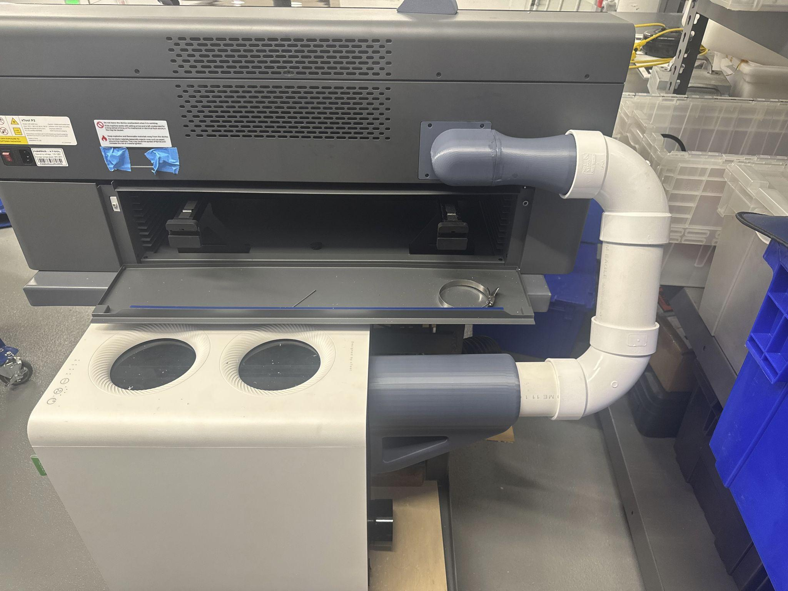

Subaru Technical Training Internship
Engineered a 14-node wireless embedded training network and an autonomous demo vehicle inside a year-long industrial internship, covering distributed sensor-node hardware, wireless control firmware, and instrumented test infrastructure. The work scaled a single-node bench prototype into a fourteen-unit deployed fleet and integrated a Time-of-Flight sensing stack onto an autonomous vehicle chassis, applying the same design-build-instrument-iterate cycle used in research hardware to a manufacturing training environment.
Node Hardware, Sensing Stack, and Fabrication Methods
The network and the demo vehicle share a common approach: validate the electronics on a single bench unit before committing to a fleet or a chassis build. The resulting stack spans two microcontroller families, a wireless control layer, and a Time-of-Flight sensing implementation:
- Bench prototype (Bug Box test bench) - ESP8266 microcontroller driving a switching MOSFET to interrupt vehicle circuits on command, with current and temperature sensing for closed-loop safety monitoring and a TP4056 LiPo charge stage on an 18650 pack
- Production node (×14) - Xiao ESP32-S3 microcontroller per node, replacing the ESP8266 bench design; dual 18650 cells (6000 mAh) with passive cooling; a logic-level MOSFET (L3705N) gate-driven through a 220Ω resistor off a GPIO pin for switched-load control
- Wireless control layer - each node hosts its own lightweight web server; the deployed firmware runs an ESP-NOW mesh with one node acting as an access-point host, letting instructors arm and fire any node in range directly from a phone or laptop
- Autonomous vehicle sensing/control stack - Arduino Uno microcontroller reading three Time-of-Flight sensors (front, left, right) for obstacle distance and derived tire rotation/speed, paired with a DRV8322 motor driver for propulsion, on a modified RC K-Truck chassis
- CAD/fabrication - SolidWorks/Fusion 360 CAD for node enclosures and the vehicle's cargo container; FDM 3D printing for enclosures, mounting blocks, and fixtures; laser cutting used elsewhere in the shop's fixture and enclosure work


Scaling One Bench Unit to a Fourteen-Node Fleet
Moving from one validated bench prototype to fourteen identical, independently deployed nodes surfaced manufacturability and reliability constraints that don't show up at the single-unit stage. Each node is built from a 23-line bill of materials assembled in roughly twenty sequenced steps, documented in a step-by-step build guide so any teammate could reproduce a node without ambiguity - a requirement that doesn't exist for a one-off bench build but becomes necessary the moment identical units need to be produced in parallel by more than one person. Serviceability was treated as a first-class constraint at fleet scale: four M3 heat-set inserts, pressed in with a soldering iron, let the top plate be removed and re-fastened in the field without stripping plastic threads, and the switching MOSFET's heat sink is both epoxied and mechanically fastened for thermal margin under repeated switching cycles rather than relying on epoxy alone. Strain relief (a rubber grommet on the switched leads) and heat-shrunk brass spade connectors on the battery leads address failure modes that are tolerable on a single bench unit but compound across fourteen field-deployed nodes. Every node is verified with a power-on smoke test - confirming the ESP32's status LED before final assembly - as an inline quality gate rather than a post-hoc check.
The Time-of-Flight sensor placement on the autonomous vehicle went through a similar validate-then-commit process: the sensing principle (timing a photon's round trip to a target) was worked out explicitly before deciding where to mount each of the three sensors and how fast to poll them, since front/left/right coverage and update rate directly determine how reliably the chassis derives distance and tire speed. Separately, the shop's Xtool laser cutter had a ventilation problem worth solving with the same rigor: its stock configuration required a hardware swap to switch between conveyor-belt and flat-bed cutting, which discouraged use of conveyor mode entirely, and its exhaust setup needed reconfiguration between jobs. Rather than fabricate a duct and see if it worked, the ventilation path was simulated in SolidWorks Flow Simulation first, and the resulting compact duct design supports both cutting modes and requires no additional per-job setup.



Fleet Deployment and Bench Verification
Fourteen independently addressable, dual-18650 (6000 mAh) nodes were built, wired, and deployed as a networked fleet, each verified with a power-on smoke test before final assembly and each field-serviceable through a four-point-fastened enclosure. The autonomous vehicle's three-sensor Time-of-Flight stack and DRV8322-driven propulsion were integrated onto the RC K-Truck chassis and demonstrated live at a company-wide event, and the laser-cutter ventilation redesign was validated in SolidWorks Flow Simulation prior to fabrication and has required no additional per-job setup since installation.